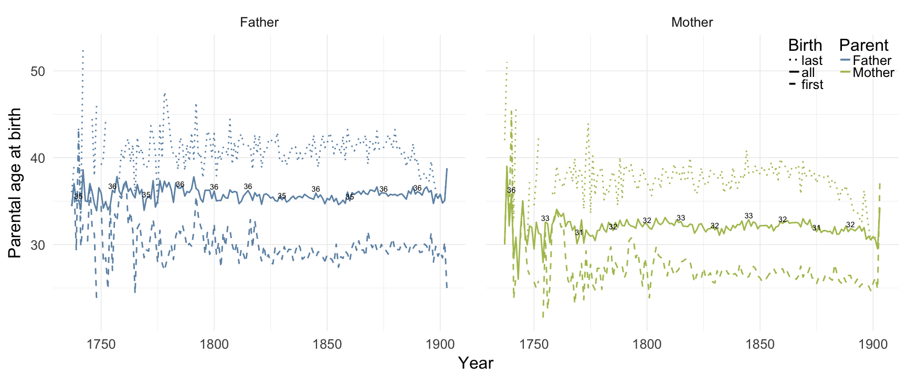
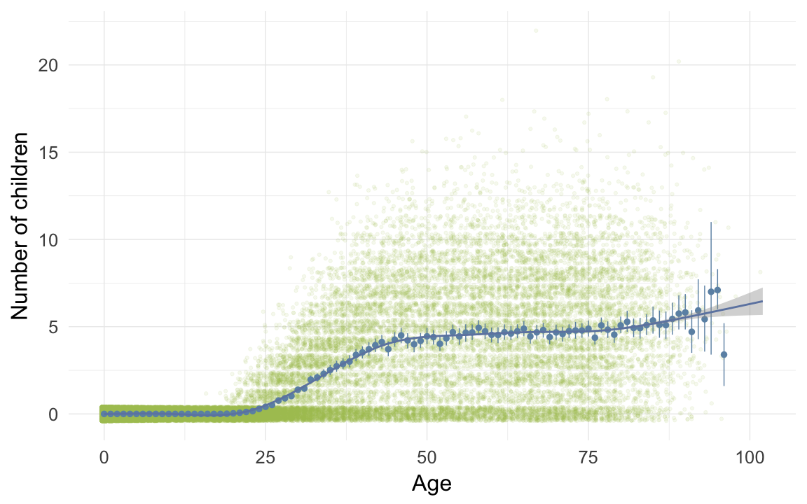
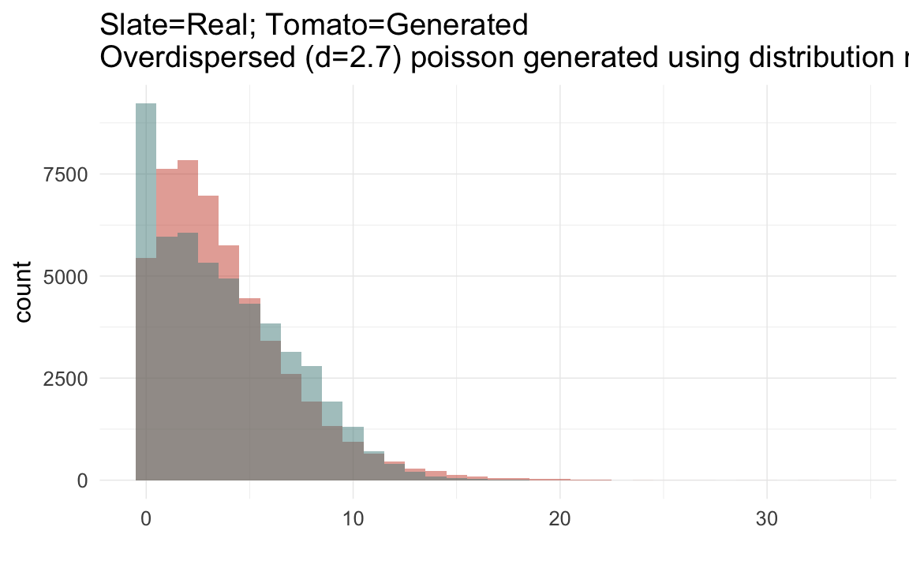
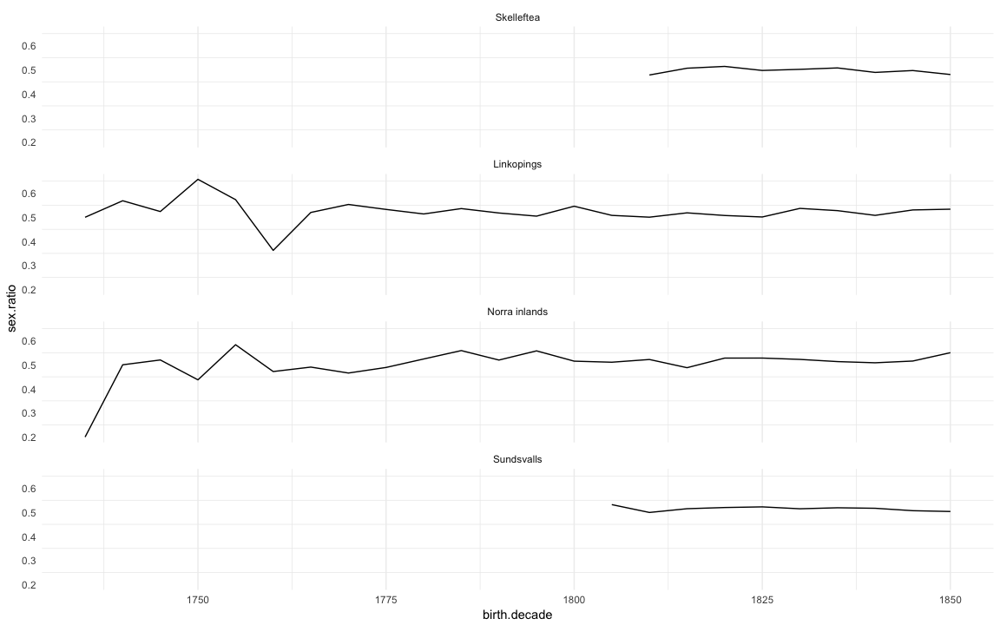

Demographic data base Sweden
Loading details
library(Hmisc); library(car); library(psych); library(QuantPsyc); library(ggplot2); library(lubridate); library(stringr); library(reshape2); library(dplyr); library(knitr); library(formr); library(data.table); library(pander)
source("0__helpers.R")
opts_chunk$set(render = pander_handler, cache=F,tidy=FALSE,dev='png',fig.width=12,fig.height=7.5)
load("ddb.rdata")
demo_trends_skelleftea = aggDemoTrends(ddb[region=="Skelleftea",])
demo_trends_norra = aggDemoTrends(ddb[region=="Norra inlands",])
demo_trends_sundsvall = aggDemoTrends(ddb[region=="Sundsvalls",])
demo_trends_linkoping = aggDemoTrends(ddb[region=="Linkopings",])
desc_theme = theme_minimal(base_size = 24)
update_geom_defaults("bar", list(fill = "#6c92b2", alpha = 1/2))
mymin = theme_minimal() +theme(panel.grid.major.y =element_blank(),panel.grid.major.x = element_line(colour="#eeeeee"))
ddb[, paternalage := 10 * paternalage]
ddb[, maternalage := 10 * maternalage]
ddb[, age := 10 * age]
ddb[, age_at_1st_child := 10 * age_at_1st_child]
ddb[, age_at_last_child := 10 * age_at_last_child]
ddb.1[, paternalage := 10 * paternalage]
ddb.1[, maternalage := 10 * maternalage]
ddb.1[, age := 10 * age]
ddb.1[, age_at_1st_child := 10 * age_at_1st_child]
ddb.1[, age_at_last_child := 10 * age_at_last_child]Variable descriptives
Whole population (N = 271129)
descriptives = psych::describeBy(ddb[, list(
paternalage, maternalage, min15.birthorder, nr.siblings, age, children, grandchildren, byear, byear.Father, age_at_1st_child, age_at_last_child
)],group = ddb$region)Linköping
round(data.frame(descriptives$`Linkopings`)[,2:12],2)| n | mean | sd | median | trimmed | mad | min | max | range | skew | kurtosis | |
|---|---|---|---|---|---|---|---|---|---|---|---|
| paternalage | 63592 | 34.24 | 7.79 | 33.17 | 33.64 | 7.58 | 10.1 | 79.79 | 69.69 | 0.82 | 1.01 |
| maternalage | 65850 | 31.27 | 6.23 | 30.87 | 31.12 | 6.91 | 10.29 | 59.78 | 49.48 | 0.21 | -0.53 |
| min15.birthorder | 64955 | 1.28 | 1.7 | 1 | 0.95 | 1.48 | 0 | 13 | 13 | 1.62 | 2.62 |
| nr.siblings | 66210 | 3.77 | 2.66 | 3 | 3.58 | 2.97 | 0 | 16 | 16 | 0.63 | -0.05 |
| age | 16458 | 11.92 | 21.16 | 1.45 | 6.5 | 2.15 | 0 | 95.76 | 95.76 | 2.01 | 2.9 |
| children | 66210 | 0.36 | 1.41 | 0 | 0 | 0 | 0 | 17 | 17 | 4.74 | 24.75 |
| grandchildren | 66210 | 0.14 | 1.22 | 0 | 0 | 0 | 0 | 37 | 37 | 13.06 | 221.8 |
| byear | 66210 | 1846 | 31.87 | 1850 | 1848 | 37.06 | 1737 | 1900 | 163 | -0.43 | -0.53 |
| byear.Father | 63597 | 1812 | 32.94 | 1817 | 1814 | 37.06 | 1668 | 1878 | 210 | -0.44 | -0.41 |
| age_at_1st_child | 6133 | 26.56 | 5.08 | 25.77 | 26.09 | 4.28 | 10.1 | 65.48 | 55.38 | 1.27 | 3.78 |
| age_at_last_child | 6133 | 34.63 | 8.03 | 34.46 | 34.4 | 9.1 | 16.08 | 76.46 | 60.38 | 0.34 | -0.02 |
describeBin(ddb[region == "Linkopings", list(survive1y, surviveR, ever_married, paternalloss, maternalloss)])| n | mean | sd | |
|---|---|---|---|
| survive1y | 61257 | 0.88 | 0.1 |
| surviveR | 35595 | 0.64 | 0.23 |
| ever_married | 66210 | 0.12 | 0.11 |
| paternalloss | 63523 | 0.56 | 0.25 |
| maternalloss | 65849 | 0.57 | 0.25 |
Sundsvall
round(data.frame(descriptives$`Sundsvalls`)[,2:12],2)| n | mean | sd | median | trimmed | mad | min | max | range | skew | kurtosis | |
|---|---|---|---|---|---|---|---|---|---|---|---|
| paternalage | 91598 | 33.71 | 7.23 | 32.77 | 33.21 | 7.12 | 10.48 | 82.06 | 71.58 | 0.75 | 0.85 |
| maternalage | 96303 | 30.74 | 6.24 | 30.28 | 30.56 | 6.88 | 10.21 | 55.66 | 45.45 | 0.24 | -0.59 |
| min15.birthorder | 94425 | 1.2 | 1.64 | 1 | 0.87 | 1.48 | 0 | 12 | 12 | 1.7 | 3.07 |
| nr.siblings | 96447 | 3.95 | 2.67 | 4 | 3.77 | 2.97 | 0 | 15 | 15 | 0.62 | 0.09 |
| age | 25491 | 10.3 | 19.27 | 1 | 5.19 | 1.48 | 0 | 92.35 | 92.35 | 2.19 | 3.82 |
| children | 96447 | 0.5 | 1.59 | 0 | 0.04 | 0 | 0 | 17 | 17 | 3.88 | 16.67 |
| grandchildren | 96447 | 0.26 | 1.76 | 0 | 0 | 0 | 0 | 47 | 47 | 9.85 | 123.7 |
| byear | 96447 | 1867 | 22.04 | 1874 | 1870 | 17.79 | 1803 | 1895 | 92 | -0.97 | 0.02 |
| byear.Father | 91603 | 1833 | 23.16 | 1839 | 1836 | 20.76 | 1735 | 1878 | 143 | -0.9 | 0.1 |
| age_at_1st_child | 12501 | 26.19 | 4.95 | 25.47 | 25.77 | 4.47 | 11.03 | 63.5 | 52.47 | 1.04 | 2.15 |
| age_at_last_child | 12501 | 33.98 | 7.58 | 33.85 | 33.79 | 8.61 | 15.04 | 72.68 | 57.65 | 0.3 | -0.12 |
describeBin(ddb[region == "Sundsvalls", list(survive1y, surviveR, ever_married, paternalloss, maternalloss)])| n | mean | sd | |
|---|---|---|---|
| survive1y | 90397 | 0.86 | 0.12 |
| surviveR | 51698 | 0.61 | 0.24 |
| ever_married | 96447 | 0.16 | 0.13 |
| paternalloss | 90949 | 0.59 | 0.24 |
| maternalloss | 95868 | 0.58 | 0.24 |
Norra inländs
round(data.frame(descriptives$`Norra inlands`)[,2:12],2)| n | mean | sd | median | trimmed | mad | min | max | range | skew | kurtosis | |
|---|---|---|---|---|---|---|---|---|---|---|---|
| paternalage | 48765 | 35.73 | 8.19 | 34.72 | 35.15 | 8.12 | 10.55 | 88.91 | 78.37 | 0.77 | 0.99 |
| maternalage | 50078 | 31.85 | 6.69 | 31.52 | 31.71 | 7.48 | 10.76 | 59.89 | 49.14 | 0.19 | -0.61 |
| min15.birthorder | 50339 | 2.07 | 2.18 | 1 | 1.74 | 1.48 | 0 | 16 | 16 | 1.28 | 1.7 |
| nr.siblings | 50845 | 5.34 | 3.13 | 5 | 5.23 | 2.97 | 0 | 18 | 18 | 0.32 | -0.27 |
| age | 19081 | 18.39 | 26.37 | 2.59 | 13.25 | 3.84 | 0 | 101.6 | 101.6 | 1.33 | 0.37 |
| children | 50845 | 1.2 | 2.68 | 0 | 0.47 | 0 | 0 | 22 | 22 | 2.41 | 5.38 |
| grandchildren | 50845 | 1.36 | 5.83 | 0 | 0 | 0 | 0 | 96 | 96 | 6.12 | 46.51 |
| byear | 50845 | 1854 | 35.23 | 1862 | 1857 | 35.58 | 1737 | 1903 | 166 | -0.79 | -0.25 |
| byear.Father | 48778 | 1818 | 35.83 | 1826 | 1822 | 35.58 | 1660 | 1879 | 219 | -0.78 | -0.08 |
| age_at_1st_child | 11621 | 27.16 | 5.42 | 26.3 | 26.68 | 4.91 | 11.13 | 65.28 | 54.15 | 1.02 | 1.92 |
| age_at_last_child | 11621 | 37.93 | 8.25 | 38.65 | 37.94 | 8.29 | 14.95 | 77.88 | 62.93 | 0.09 | 0.15 |
describeBin(ddb[region == "Norra inlands", list(survive1y, surviveR, ever_married, paternalloss, maternalloss)])| n | mean | sd | |
|---|---|---|---|
| survive1y | 47585 | 0.84 | 0.13 |
| surviveR | 35880 | 0.65 | 0.23 |
| ever_married | 50845 | 0.26 | 0.19 |
| paternalloss | 48172 | 0.28 | 0.2 |
| maternalloss | 49555 | 0.29 | 0.21 |
Skellefteå
round(data.frame(descriptives$`Skelleftea`)[,2:12],2)| n | mean | sd | median | trimmed | mad | min | max | range | skew | kurtosis | |
|---|---|---|---|---|---|---|---|---|---|---|---|
| paternalage | 55975 | 34.72 | 7.39 | 33.85 | 34.26 | 7.54 | 11.3 | 77.23 | 65.93 | 0.63 | 0.37 |
| maternalage | 57578 | 31.93 | 6.32 | 31.65 | 31.82 | 7.14 | 11.49 | 57.2 | 45.72 | 0.13 | -0.72 |
| min15.birthorder | 57088 | 2.28 | 2.18 | 2 | 1.98 | 1.48 | 0 | 18 | 18 | 1.1 | 1.08 |
| nr.siblings | 57627 | 5.41 | 2.97 | 5 | 5.36 | 2.97 | 0 | 20 | 20 | 0.26 | -0.06 |
| age | 17317 | 16 | 22.13 | 3.17 | 11.7 | 4.7 | 0 | 88.17 | 88.17 | 1.34 | 0.54 |
| children | 57627 | 1.02 | 2.42 | 0 | 0.33 | 0 | 0 | 21 | 21 | 2.54 | 5.84 |
| grandchildren | 57627 | 0.57 | 3.22 | 0 | 0 | 0 | 0 | 59 | 59 | 8.06 | 79.73 |
| byear | 57627 | 1864 | 22.95 | 1867 | 1865 | 26.69 | 1811 | 1900 | 89 | -0.44 | -0.94 |
| byear.Father | 55984 | 1829 | 23.97 | 1832 | 1830 | 26.69 | 1742 | 1878 | 136 | -0.41 | -0.74 |
| age_at_1st_child | 11564 | 26.89 | 4.91 | 26.11 | 26.47 | 4.33 | 11.3 | 57.85 | 46.55 | 0.99 | 1.83 |
| age_at_last_child | 11564 | 36.77 | 7.36 | 37.38 | 36.87 | 7.86 | 11.62 | 70.18 | 58.56 | -0.06 | -0.26 |
describeBin(ddb[region == "Skelleftea", list(survive1y, surviveR, ever_married, paternalloss, maternalloss)])| n | mean | sd | |
|---|---|---|---|
| survive1y | 55085 | 0.89 | 0.1 |
| surviveR | 40358 | 0.72 | 0.2 |
| ever_married | 57627 | 0.26 | 0.19 |
| paternalloss | 55834 | 0.27 | 0.2 |
| maternalloss | 57481 | 0.29 | 0.2 |
included sample (N = 187121)
descriptives = psych::describeBy(ddb.1[, list(
paternalage, maternalage, min15.birthorder, nr.siblings, age, children, grandchildren, byear, byear.Father, age_at_1st_child, age_at_last_child
)],group = ddb.1$region)Linköping
round(data.frame(descriptives$`Linkopings`)[,2:12],2)| n | mean | sd | median | trimmed | mad | min | max | range | skew | kurtosis | |
|---|---|---|---|---|---|---|---|---|---|---|---|
| paternalage | 53315 | 34.29 | 7.81 | 33.22 | 33.7 | 7.54 | 10.1 | 79.79 | 69.69 | 0.82 | 1.04 |
| maternalage | 53155 | 31.42 | 6.16 | 31.07 | 31.29 | 6.84 | 10.29 | 59.44 | 49.14 | 0.17 | -0.59 |
| min15.birthorder | 53315 | 1.44 | 1.75 | 1 | 1.13 | 1.48 | 0 | 13 | 13 | 1.48 | 2.19 |
| nr.siblings | 53315 | 3.96 | 2.65 | 4 | 3.78 | 2.97 | 0 | 16 | 16 | 0.58 | -0.11 |
| age | 14953 | 12.54 | 21.61 | 1.62 | 7.14 | 2.39 | 0 | 95.76 | 95.76 | 1.93 | 2.53 |
| children | 53315 | 0.43 | 1.52 | 0 | 0.01 | 0 | 0 | 17 | 17 | 4.29 | 20.09 |
| grandchildren | 53315 | 0.17 | 1.34 | 0 | 0 | 0 | 0 | 37 | 37 | 11.98 | 186 |
| byear | 53315 | 1838 | 28.27 | 1841 | 1840 | 34.1 | 1737 | 1880 | 143 | -0.5 | -0.33 |
| byear.Father | 53315 | 1804 | 29.58 | 1807 | 1806 | 34.1 | 1668 | 1865 | 197 | -0.51 | -0.23 |
| age_at_1st_child | 5895 | 26.6 | 5.1 | 25.81 | 26.13 | 4.28 | 10.1 | 65.48 | 55.38 | 1.28 | 3.83 |
| age_at_last_child | 5895 | 34.67 | 8.06 | 34.5 | 34.44 | 9.14 | 16.08 | 76.46 | 60.38 | 0.34 | -0.02 |
describeBin(ddb.1[region == "Linkopings", list(survive1y, surviveR, ever_married, paternalloss, maternalloss)])| n | mean | sd | |
|---|---|---|---|
| survive1y | 50540 | 0.87 | 0.11 |
| surviveR | 33219 | 0.66 | 0.23 |
| ever_married | 53315 | 0.14 | 0.12 |
| paternalloss | 53262 | 0.5 | 0.25 |
| maternalloss | 53155 | 0.5 | 0.25 |
Sundsvall
round(data.frame(descriptives$`Sundsvalls`)[,2:12],2)| n | mean | sd | median | trimmed | mad | min | max | range | skew | kurtosis | |
|---|---|---|---|---|---|---|---|---|---|---|---|
| paternalage | 60204 | 33.5 | 7.26 | 32.49 | 32.98 | 7.05 | 10.48 | 82.06 | 71.58 | 0.79 | 1.04 |
| maternalage | 60170 | 30.96 | 6.21 | 30.53 | 30.79 | 6.79 | 10.21 | 55.66 | 45.45 | 0.22 | -0.56 |
| min15.birthorder | 60204 | 1.57 | 1.73 | 1 | 1.3 | 1.48 | 0 | 12 | 12 | 1.38 | 2.03 |
| nr.siblings | 60204 | 4.26 | 2.69 | 4 | 4.09 | 2.97 | 0 | 15 | 15 | 0.57 | 0.06 |
| age | 18030 | 13.52 | 21.66 | 1.63 | 8.51 | 2.41 | 0 | 92.35 | 92.35 | 1.7 | 1.72 |
| children | 60204 | 0.77 | 1.92 | 0 | 0.23 | 0 | 0 | 17 | 17 | 2.98 | 9.47 |
| grandchildren | 60204 | 0.4 | 2.18 | 0 | 0 | 0 | 0 | 47 | 47 | 7.85 | 78.49 |
| byear | 60204 | 1856 | 20.3 | 1862 | 1858 | 19.27 | 1803 | 1880 | 77 | -0.78 | -0.52 |
| byear.Father | 60204 | 1823 | 21.68 | 1828 | 1825 | 20.76 | 1735 | 1865 | 130 | -0.7 | -0.33 |
| age_at_1st_child | 12011 | 26.23 | 4.94 | 25.5 | 25.8 | 4.48 | 11.03 | 63.5 | 52.47 | 1.05 | 2.18 |
| age_at_last_child | 12011 | 34.05 | 7.57 | 33.91 | 33.86 | 8.57 | 15.04 | 72.68 | 57.65 | 0.3 | -0.1 |
describeBin(ddb.1[region == "Sundsvalls", list(survive1y, surviveR, ever_married, paternalloss, maternalloss)])| n | mean | sd | |
|---|---|---|---|
| survive1y | 57985 | 0.86 | 0.12 |
| surviveR | 42094 | 0.69 | 0.21 |
| ever_married | 60204 | 0.24 | 0.18 |
| paternalloss | 59975 | 0.47 | 0.25 |
| maternalloss | 60040 | 0.45 | 0.25 |
Norra inländs
round(data.frame(descriptives$`Norra inlands`)[,2:12],2)| n | mean | sd | median | trimmed | mad | min | max | range | skew | kurtosis | |
|---|---|---|---|---|---|---|---|---|---|---|---|
| paternalage | 34667 | 35.66 | 8.3 | 34.59 | 35.06 | 8.14 | 10.55 | 88.91 | 78.37 | 0.8 | 1.1 |
| maternalage | 34357 | 32.16 | 6.67 | 31.84 | 32.02 | 7.42 | 10.76 | 59.89 | 49.14 | 0.19 | -0.56 |
| min15.birthorder | 34667 | 2.59 | 2.2 | 2 | 2.33 | 1.48 | 0 | 16 | 16 | 1.12 | 1.36 |
| nr.siblings | 34667 | 5.84 | 3.08 | 6 | 5.76 | 2.97 | 0 | 18 | 18 | 0.28 | -0.17 |
| age | 14917 | 22.49 | 27.93 | 6.22 | 18.11 | 9.22 | 0 | 101.6 | 101.6 | 1.01 | -0.41 |
| children | 34667 | 1.72 | 3.07 | 0 | 1 | 0 | 0 | 22 | 22 | 1.83 | 2.61 |
| grandchildren | 34667 | 1.96 | 6.93 | 0 | 0.13 | 0 | 0 | 96 | 96 | 5.04 | 31.33 |
| byear | 34667 | 1839 | 31.28 | 1846 | 1842 | 32.62 | 1737 | 1880 | 143 | -0.72 | -0.33 |
| byear.Father | 34667 | 1804 | 32.33 | 1810 | 1807 | 32.62 | 1680 | 1867 | 187 | -0.7 | -0.21 |
| age_at_1st_child | 11295 | 27.17 | 5.41 | 26.31 | 26.7 | 4.9 | 11.13 | 65.28 | 54.15 | 1.03 | 1.95 |
| age_at_last_child | 11295 | 37.98 | 8.21 | 38.68 | 37.98 | 8.24 | 14.95 | 77.88 | 62.93 | 0.1 | 0.16 |
describeBin(ddb.1[region == "Norra inlands", list(survive1y, surviveR, ever_married, paternalloss, maternalloss)])| n | mean | sd | |
|---|---|---|---|
| survive1y | 33588 | 0.85 | 0.12 |
| surviveR | 30571 | 0.72 | 0.2 |
| ever_married | 34667 | 0.37 | 0.23 |
| paternalloss | 34481 | 0.17 | 0.14 |
| maternalloss | 34216 | 0.17 | 0.14 |
Skellefteå
round(data.frame(descriptives$`Skelleftea`)[,2:12],2)| n | mean | sd | median | trimmed | mad | min | max | range | skew | kurtosis | |
|---|---|---|---|---|---|---|---|---|---|---|---|
| paternalage | 38935 | 34.67 | 7.43 | 33.78 | 34.2 | 7.62 | 11.3 | 77.23 | 65.93 | 0.63 | 0.35 |
| maternalage | 38917 | 32.1 | 6.28 | 31.85 | 32 | 7.11 | 11.91 | 50.9 | 38.99 | 0.12 | -0.73 |
| min15.birthorder | 38935 | 2.67 | 2.19 | 2 | 2.43 | 1.48 | 0 | 18 | 18 | 1.01 | 0.97 |
| nr.siblings | 38935 | 5.93 | 2.93 | 6 | 5.88 | 2.97 | 0 | 20 | 20 | 0.22 | 0.1 |
| age | 14068 | 18.77 | 23.22 | 5.1 | 14.91 | 7.57 | 0 | 88.17 | 88.17 | 1.07 | -0.13 |
| children | 38935 | 1.47 | 2.8 | 0 | 0.79 | 0 | 0 | 21 | 21 | 1.91 | 2.78 |
| grandchildren | 38935 | 0.83 | 3.86 | 0 | 0 | 0 | 0 | 59 | 59 | 6.66 | 54.16 |
| byear | 38935 | 1853 | 18.68 | 1855 | 1854 | 22.24 | 1811 | 1880 | 69 | -0.35 | -1.04 |
| byear.Father | 38935 | 1818 | 20.04 | 1821 | 1819 | 22.24 | 1742 | 1865 | 123 | -0.33 | -0.69 |
| age_at_1st_child | 11314 | 26.9 | 4.9 | 26.12 | 26.49 | 4.34 | 11.3 | 57.85 | 46.55 | 0.99 | 1.82 |
| age_at_last_child | 11314 | 36.78 | 7.33 | 37.38 | 36.88 | 7.84 | 11.62 | 68.33 | 56.72 | -0.07 | -0.28 |
describeBin(ddb.1[region == "Skelleftea", list(survive1y, surviveR, ever_married, paternalloss, maternalloss)])| n | mean | sd | |
|---|---|---|---|
| survive1y | 37700 | 0.88 | 0.1 |
| surviveR | 33975 | 0.75 | 0.19 |
| ever_married | 38935 | 0.36 | 0.23 |
| paternalloss | 38824 | 0.16 | 0.14 |
| maternalloss | 38851 | 0.17 | 0.14 |
Number of families with varying numbers of siblings available for comparison
crosstabs(ddb[!duplicated(idParents), ]$nr.siblings)## ddb[!duplicated(idParents), ]$nr.siblings
## 0 1 2 3 4 5 6 7 8 9 10 11
## 19498 13372 10612 8528 6685 5189 3927 2946 1929 1170 620 315
## 12 13 14 15 16 17 18 20
## 138 65 37 14 6 1 2 1qplot(ddb[!duplicated(idParents), ]$nr.siblings, binwidth = 1) + xlab("Number of siblings per family") + desc_theme
Reproductive timing
Linköping
ggplot(data = demo_trends_linkoping) +
geom_line(aes(x= Year, y = first, linetype = "first", colour = Parent), size = 1) +
geom_line(aes(x = Year, y = all, linetype = "all", colour = Parent), size = 1) +
geom_line(aes(x= Year, y = last, linetype = "last", colour = Parent),size = 1) +
scale_colour_manual(values = c(Father = "#6c92b2", Mother = "#aec05d")) +
scale_linetype_manual("Birth", breaks = c("last", "all","first"), values = c( "solid","dashed", "dotted")) +
scale_y_continuous("Parental age at birth") +
geom_text(aes(x = Year, y = all + 0.5,
label = ifelse(Year %% 15 == 0, round(all), NA))) +
facet_wrap(~ Parent) +
desc_theme + theme(legend.position = c(1,1),
legend.justification = c(1,1),
legend.box = "horizontal",
panel.margin = unit(2, "lines"))Sundsvall
ggplot(data = demo_trends_sundsvall) +
geom_line(aes(x= Year, y = first, linetype = "first", colour = Parent), size = 1) +
geom_line(aes(x = Year, y = all, linetype = "all", colour = Parent), size = 1) +
geom_line(aes(x= Year, y = last, linetype = "last", colour = Parent),size = 1) +
scale_colour_manual(values = c(Father = "#6c92b2", Mother = "#aec05d")) +
scale_linetype_manual("Birth", breaks = c("last", "all","first"), values = c( "solid","dashed", "dotted")) +
scale_y_continuous("Parental age at birth") +
geom_text(aes(x = Year, y = all + 0.5,
label = ifelse(Year %% 15 == 0, round(all), NA))) +
facet_wrap(~ Parent) +
desc_theme + theme(legend.position = c(1,1),
legend.justification = c(1,1),
legend.box = "horizontal",
panel.margin = unit(2, "lines"))
Norra inländs
ggplot(data = demo_trends_norra) +
geom_line(aes(x= Year, y = first, linetype = "first", colour = Parent), size = 1) +
geom_line(aes(x = Year, y = all, linetype = "all", colour = Parent), size = 1) +
geom_line(aes(x= Year, y = last, linetype = "last", colour = Parent),size = 1) +
scale_colour_manual(values = c(Father = "#6c92b2", Mother = "#aec05d")) +
scale_linetype_manual("Birth", breaks = c("last", "all","first"), values = c( "solid","dashed", "dotted")) +
scale_y_continuous("Parental age at birth") +
geom_text(aes(x = Year, y = all + 0.5,
label = ifelse(Year %% 15 == 0, round(all), NA))) +
facet_wrap(~ Parent) +
desc_theme + theme(legend.position = c(1,1),
legend.justification = c(1,1),
legend.box = "horizontal",
panel.margin = unit(2, "lines"))
Skellefteå
ggplot(data = demo_trends_skelleftea) +
geom_line(aes(x= Year, y = first, linetype = "first", colour = Parent), size = 1) +
geom_line(aes(x = Year, y = all, linetype = "all", colour = Parent), size = 1) +
geom_line(aes(x= Year, y = last, linetype = "last", colour = Parent),size = 1) +
scale_colour_manual(values = c(Father = "#6c92b2", Mother = "#aec05d")) +
scale_linetype_manual("Birth", breaks = c("last", "all","first"), values = c( "solid","dashed", "dotted")) +
scale_y_continuous("Parental age at birth") +
geom_text(aes(x = Year, y = all + 0.5,
label = ifelse(Year %% 15 == 0, round(all), NA))) +
facet_wrap(~ Parent) +
desc_theme + theme(legend.position = c(1,1),
legend.justification = c(1,1),
legend.box = "horizontal",
panel.margin = unit(2, "lines"))
Missingness patterns
The first table shows the number of missings per variable, the second table, using the indexes from the first, shows missings in which variables tend to occur together. Most variables of interest in this study are derived from these dates and so these patterns can show many cases did not have the data to calculate e.g. paternal loss (those lacking either the father’s death date, the anchor’s birth date or both).
pander_escape(missingness_patterns(ddb[, list(
bdate, ddate, bdate.Father, ddate.Father, bdate.Mother, ddate.Mother
)]))## index col missings
## 1 ddate 192778
## 2 ddate.Mother 180223
## 3 ddate.Father 176051
## 4 bdate.Father 11167
## 5 bdate.Mother 1256| Pattern | Freq | Culprit | |
|---|---|---|---|
| 4 | 123__ | 117430 | |
| 16 | 1____ | 34786 | ddate |
| 32 | _____ | 32303 | _ |
| 20 | _23__ | 26521 | |
| 8 | 12___ | 18942 | |
| 12 | 1_3__ | 13413 | |
| 24 | _2___ | 8595 | ddate.Mother |
| 28 | __3__ | 7427 | ddate.Father |
| 2 | 1234_ | 5732 | |
| 18 | _234_ | 1957 | |
| 10 | 1_34_ | 1470 | |
| 26 | __34_ | 1124 | |
| 1 | 12345 | 437 | |
| 3 | 123_5 | 274 | |
| 17 | _2345 | 134 | |
| 30 | ___4_ | 76 | bdate.Father |
| 14 | 1__4_ | 66 | |
| 7 | 12__5 | 60 | |
| 31 | ____5 | 53 | bdate.Mother |
| 19 | _23_5 | 50 | |
| 15 | 1___5 | 45 | |
| 13 | 1__45 | 35 | |
| 9 | 1_345 | 33 | |
| 23 | _2__5 | 28 | |
| 29 | ___45 | 26 | |
| 27 | __3_5 | 23 | |
| 6 | 12_4_ | 22 | |
| 5 | 12_45 | 21 | |
| 25 | __345 | 14 | |
| 11 | 1_3_5 | 12 | |
| 21 | _2_45 | 11 | |
| 22 | _2_4_ | 9 |
Correlations between variables
round(cor(ddb[, list(
paternalage, maternalage, min15.birthorder, nr.siblings, children, grandchildren, byear, byear.Father, age_at_1st_child, age_at_last_child
)], use = "pairwise.complete.obs"),2)| paternalage | maternalage | min15.birthorder | nr.siblings | children | grandchildren | byear | byear.Father | age_at_1st_child | age_at_last_child | |
|---|---|---|---|---|---|---|---|---|---|---|
| paternalage | 1 | 0.61 | 0.46 | 0.18 | 0 | 0 | -0.01 | -0.27 | 0.02 | 0.02 |
| maternalage | 0.61 | 1 | 0.45 | 0.15 | 0.01 | 0 | -0.03 | -0.18 | 0.01 | 0 |
| min15.birthorder | 0.46 | 0.45 | 1 | 0.52 | 0.21 | 0.08 | -0.14 | -0.26 | 0.03 | 0.05 |
| nr.siblings | 0.18 | 0.15 | 0.52 | 1 | 0.1 | 0.04 | -0.01 | -0.06 | 0.04 | 0.08 |
| children | 0 | 0.01 | 0.21 | 0.1 | 1 | 0.51 | -0.29 | -0.28 | -0.19 | 0.68 |
| grandchildren | 0 | 0 | 0.08 | 0.04 | 0.51 | 1 | -0.24 | -0.24 | -0.07 | 0.32 |
| byear | -0.01 | -0.03 | -0.14 | -0.01 | -0.29 | -0.24 | 1 | 0.97 | -0.18 | -0.37 |
| byear.Father | -0.27 | -0.18 | -0.26 | -0.06 | -0.28 | -0.24 | 0.97 | 1 | -0.17 | -0.35 |
| age_at_1st_child | 0.02 | 0.01 | 0.03 | 0.04 | -0.19 | -0.07 | -0.18 | -0.17 | 1 | 0.46 |
| age_at_last_child | 0.02 | 0 | 0.05 | 0.08 | 0.68 | 0.32 | -0.37 | -0.35 | 0.46 | 1 |
ggplot(data=ddb, aes(x = byear, y = paternalage)) +
geom_linerange(stat = "summary", fun.data = "median_hilow", colour = "#aec05d") +
geom_pointrange(stat = "summary", fun.data = "mean_cl_boot", colour = "#6c92b2") +
facet_wrap(~ region, ncol = 1) +
desc_themeggplot(data=ddb, aes(x = byear, y = maternalage)) +
geom_linerange(stat = "summary", fun.data = "median_hilow", colour = "#aec05d") +
geom_pointrange(stat = "summary", fun.data = "mean_cl_boot", colour = "#6c92b2") +
facet_wrap(~ region, ncol = 1) +
desc_theme
ggplot(data=ddb, aes(x = byear, y = age_at_1st_child)) +
geom_linerange(stat = "summary", fun.data = "median_hilow", colour = "#aec05d") +
geom_pointrange(stat = "summary", fun.data = "mean_cl_boot", colour = "#6c92b2") +
facet_wrap(~ region, ncol = 1) +
desc_themeggplot(data=ddb, aes(x = byear, y = age_at_last_child)) +
geom_linerange(stat = "summary", fun.data = "median_hilow", colour = "#aec05d") +
geom_pointrange(stat = "summary", fun.data = "mean_cl_boot", colour = "#6c92b2") +
facet_wrap(~ region, ncol = 1) +
desc_theme
ggplot(data=ddb, aes(x = byear, y = children)) +
geom_linerange(stat = "summary", fun.data = "median_hilow", colour = "#aec05d") +
geom_pointrange(stat = "summary", fun.data = "mean_cl_boot", colour = "#6c92b2") +
facet_wrap(~ region, ncol = 1) +
desc_themeggplot(data=ddb, aes(x = byear, y = survive1y)) +
geom_pointrange(stat = "summary", fun.data = "mean_cl_boot", colour = "#aec05d") +
facet_wrap(~ region, ncol = 1) +
desc_theme
ggplot(data=ddb, aes(x = byear, y = surviveR)) +
geom_pointrange(stat = "summary", fun.data = "mean_cl_boot", colour = "#aec05d") +
facet_wrap(~ region, ncol = 1) +
desc_theme
ggplot(data=ddb, aes(x = byear, y = children.surviving5y)) +
geom_linerange(stat = "summary", fun.data = "median_hilow", colour = "#aec05d") +
geom_pointrange(stat = "summary", fun.data = "mean_cl_boot", colour = "#6c92b2") +
desc_theme
ggplot(data=ddb, aes(x = children, y = grandchildren)) +
geom_jitter(colour = "#aec05d", alpha = I(0.1)) +
geom_pointrange(stat = "summary", fun.data = "median_hilow", colour = "#6c92b2") +
geom_smooth(method = "glm", formula = y ~ poly(x,3), colour = "#6e85b0") +
desc_theme
ggplot(data=ddb, aes(x = children, y = children.survivingR)) +
geom_jitter(colour = "#aec05d", alpha = I(0.1)) +
geom_pointrange(stat = "summary", fun.data = "median_hilow", colour = "#6c92b2") +
geom_smooth(method = "glm", formula = y ~ poly(x,3), colour = "#6e85b0") +
desc_theme
ggplot(data=ddb, aes(x = children.survivingR, y = grandchildren)) +
geom_jitter(colour = "#aec05d", alpha = I(0.1)) +
geom_pointrange(stat = "summary", fun.data = "median_hilow", colour = "#6c92b2") +
geom_smooth(method = "glm", formula = y ~ poly(x,3), colour = "#6e85b0") +
desc_theme
ggplot(data=ddb, aes(x = round(age), y = children)) +
geom_jitter(colour = "#aec05d", alpha = I(0.1)) +
geom_pointrange(stat = "summary", fun.data = "mean_cl_boot", colour = "#6c92b2") +
geom_smooth(colour = "#6e85b0") +
xlab("Age") +
ylab("Number of children") +
desc_theme## geom_smooth: method="auto" and size of largest group is >=1000, so using gam with formula: y ~ s(x, bs = "cs"). Use 'method = x' to change the smoothing method.
ggplot(data=ddb[children>0,], aes(x = round(age), y = children)) +
geom_jitter(colour = "#aec05d", alpha = I(0.1)) +
geom_pointrange(stat = "summary", fun.data = "mean_cl_boot", colour = "#6c92b2") +
geom_smooth(colour = "#6e85b0") +
xlab("Age") +
ylab("Number of children") +
desc_theme## geom_smooth: method="auto" and size of largest group is >=1000, so using gam with formula: y ~ s(x, bs = "cs"). Use 'method = x' to change the smoothing method.
plot_zero_infl(ddb[ spouses > 0, ]$children)ggplot(data=ddb, aes(x = paternalage.factor, y = survive1y)) +
geom_pointrange(stat = "summary", fun.data = "mean_cl_boot", colour = "#aec05d") +
facet_wrap(~ region, ncol = 1) +
desc_themeggplot(data=ddb[spouses > 0, ], aes(x = paternalage.factor, y = children)) +
geom_pointrange(stat = "summary", fun.data = "mean_cl_boot", colour = "#aec05d") +
facet_wrap(~ region) +
desc_theme
Opportunities for selection
ddb.1$birth.decade = round(ddb.1$byear/5)*5
episodes = ddb.1 %>%
filter(!is.na(male) | !is.na(survive1y) | !is.na(ever_married)) %>%
group_by(region, birth.decade) %>%
summarise(
"Population size" = as.numeric(length(idIndividu)),
"0. Children surviving 5 years" = ifelse(between(birth.decade, 1735,1845), cva(children.surviving5y), NA_real_ ),
"0. Any surviving children" = ifelse(between(birth.decade, 1755,1845), cva_bin(any_surviving_children), NA_real_ ),
"1. Surviving first year" = cva_bin(survive1y),
"2. Surviving to 15" = ifelse(between(birth.decade, 1735,1865), cva_bin(surviveR[survive1y==T]), NA_real_ ),
"3. Ever married" = ifelse(between(birth.decade, 1735,1845), cva_bin(ever_married[surviveR==1]), NA_real_ ),
"4. Children surviving 5 years" = ifelse(between(birth.decade, 1735,1845), cva(children.surviving5y[ever_married==1]), NA_real_ ),
"5. Grandchildren" = ifelse(between(birth.decade, 1735,1800), cva(grandchildren[children.surviving5y>0]), NA_real_ )
) %>%
data.table()
data.frame(episodes[order(birth.decade), ])| region | birth.decade | Population.size | X0..Children.surviving.5.years | X0..Any.surviving.children | X1..Surviving.first.year | X2..Surviving.to.15 | X3..Ever.married | X4..Children.surviving.5.years | X5..Grandchildren |
|---|---|---|---|---|---|---|---|---|---|
| Norra inlands | 1735 | 5 | 1.241 | NA | 0 | 0 | 0.5 | 1.023 | 0.9742 |
| Linkopings | 1735 | 6 | 2.449 | NA | 0 | 0 | 1 | 1.414 | NA |
| Norra inlands | 1740 | 19 | 1.23 | NA | 0 | 0.3651 | 0.603 | 0.6708 | 0.7972 |
| Linkopings | 1740 | 63 | 2.005 | NA | 0.3397 | 0.5252 | 0.6708 | 0.777 | 1.619 |
| Norra inlands | 1745 | 28 | 1.117 | NA | 0.2828 | 0 | 0.527 | 0.6644 | 0.724 |
| Linkopings | 1745 | 98 | 1.975 | NA | 0.2804 | 0.3162 | 0.8165 | 0.8989 | 1.276 |
| Norra inlands | 1750 | 39 | 1.267 | NA | 0.297 | 0.3464 | 0.4364 | 0.6322 | 1.24 |
| Linkopings | 1750 | 132 | 3.028 | NA | 0.4156 | 0.5279 | 0.952 | 1.223 | 1.144 |
| Norra inlands | 1755 | 46 | 1.296 | 1.044 | 0.1562 | 0.3111 | 0.5401 | 0.6286 | 0.6316 |
| Linkopings | 1755 | 134 | 2.325 | 2.256 | 0.2582 | 0.465 | 0.7143 | 1.164 | 1.335 |
| Norra inlands | 1760 | 378 | 1.862 | 1.561 | 0.5419 | 0.3302 | 0.7121 | 0.8094 | 1.055 |
| Linkopings | 1760 | 141 | 2.805 | 2.614 | 0.2621 | 0.513 | 1 | 1.188 | 1.501 |
| Norra inlands | 1765 | 381 | 1.684 | 1.44 | 0.3436 | 0.2661 | 0.608 | 0.8138 | 1.074 |
| Linkopings | 1765 | 174 | 2.068 | 1.924 | 0.3855 | 0.4449 | 0.8272 | 0.8567 | 1.06 |
| Norra inlands | 1770 | 322 | 1.566 | 1.36 | 0.3453 | 0.2787 | 0.6335 | 0.759 | 0.9309 |
| Linkopings | 1770 | 164 | 2.349 | 2.031 | 0.4666 | 0.4313 | 0.869 | 0.9784 | 1.169 |
| Norra inlands | 1775 | 423 | 1.809 | 1.535 | 0.5536 | 0.4269 | 0.6494 | 0.823 | 0.9359 |
| Linkopings | 1775 | 174 | 3.393 | 3.381 | 0.3586 | 0.5814 | 1.014 | 1.244 | 1.562 |
| Norra inlands | 1780 | 528 | 1.831 | 1.53 | 0.5881 | 0.426 | 0.6515 | 0.8312 | 0.9433 |
| Linkopings | 1780 | 202 | 3.346 | 3.017 | 0.4529 | 0.5774 | 0.686 | 1.451 | 1.643 |
| Norra inlands | 1785 | 533 | 1.923 | 1.659 | 0.5704 | 0.4034 | 0.7823 | 0.7833 | 0.9454 |
| Linkopings | 1785 | 198 | 2.669 | 2.321 | 0.4157 | 0.4973 | 1.011 | 0.9476 | 1.147 |
| Linkopings | 1790 | 1127 | 3.104 | 2.806 | 0.4389 | 0.533 | 0.982 | 1.057 | 1.283 |
| Norra inlands | 1790 | 666 | 1.876 | 1.589 | 0.5 | 0.4284 | 0.7484 | 0.7976 | 0.9506 |
| Linkopings | 1795 | 1663 | 3.057 | 2.784 | 0.4126 | 0.4827 | 1.052 | 1.021 | 1.495 |
| Norra inlands | 1795 | 900 | 1.864 | 1.552 | 0.5239 | 0.4729 | 0.7138 | 0.749 | 1.096 |
| Linkopings | 1800 | 1938 | 3.007 | 2.673 | 0.4032 | 0.502 | 0.9666 | 1.026 | 1.505 |
| Norra inlands | 1800 | 879 | 1.655 | 1.368 | 0.4159 | 0.3807 | 0.692 | 0.7795 | 1.013 |
| Sundsvalls | 1805 | 742 | 1.854 | 1.571 | 0.4453 | 0.4121 | 0.6569 | 0.8643 | NA |
| Linkopings | 1805 | 2198 | 3.184 | 2.918 | 0.4057 | 0.5324 | 1.017 | 1.103 | NA |
| Norra inlands | 1805 | 1018 | 1.599 | 1.335 | 0.4902 | 0.4072 | 0.6138 | 0.7286 | NA |
| Sundsvalls | 1810 | 912 | 1.872 | 1.522 | 0.4691 | 0.3116 | 0.7276 | 0.8743 | NA |
| Linkopings | 1810 | 2514 | 3.417 | 3.121 | 0.4432 | 0.6367 | 1.067 | 1.058 | NA |
| Norra inlands | 1810 | 1084 | 1.495 | 1.245 | 0.4955 | 0.3512 | 0.593 | 0.6844 | NA |
| Skelleftea | 1810 | 63 | 1.376 | 1.155 | 0.2255 | 0.3651 | 0.603 | 0.7174 | NA |
| Sundsvalls | 1815 | 1631 | 1.829 | 1.493 | 0.4522 | 0.2854 | 0.7283 | 0.8679 | NA |
| Linkopings | 1815 | 2649 | 3.118 | 2.897 | 0.4398 | 0.4961 | 1.102 | 1.006 | NA |
| Norra inlands | 1815 | 1137 | 1.534 | 1.287 | 0.486 | 0.2939 | 0.643 | 0.7055 | NA |
| Skelleftea | 1815 | 1023 | 1.439 | 1.243 | 0.4562 | 0.2914 | 0.7283 | 0.6568 | NA |
| Sundsvalls | 1820 | 2191 | 1.759 | 1.489 | 0.4852 | 0.2711 | 0.7259 | 0.7947 | NA |
| Linkopings | 1820 | 2734 | 3.344 | 3.065 | 0.4305 | 0.4979 | 1.196 | 1.074 | NA |
| Norra inlands | 1820 | 1350 | 1.507 | 1.267 | 0.4001 | 0.3773 | 0.6382 | 0.6807 | NA |
| Skelleftea | 1820 | 1915 | 1.385 | 1.182 | 0.4219 | 0.2811 | 0.6545 | 0.6778 | NA |
| Sundsvalls | 1825 | 2518 | 1.704 | 1.417 | 0.4135 | 0.2845 | 0.663 | 0.8698 | NA |
| Linkopings | 1825 | 2870 | 3.341 | 3.041 | 0.3868 | 0.487 | 1.166 | 1.162 | NA |
| Norra inlands | 1825 | 1455 | 1.545 | 1.321 | 0.4089 | 0.4073 | 0.5931 | 0.7182 | NA |
| Skelleftea | 1825 | 2214 | 1.368 | 1.193 | 0.2825 | 0.2731 | 0.6276 | 0.6872 | NA |
| Sundsvalls | 1830 | 2484 | 1.824 | 1.544 | 0.4656 | 0.3158 | 0.6995 | 0.8445 | NA |
| Linkopings | 1830 | 2773 | 3.377 | 3.122 | 0.4276 | 0.4865 | 1.19 | 1.154 | NA |
| Norra inlands | 1830 | 1581 | 1.47 | 1.267 | 0.3761 | 0.3597 | 0.6013 | 0.7136 | NA |
| Skelleftea | 1830 | 2282 | 1.405 | 1.272 | 0.3531 | 0.3416 | 0.6268 | 0.6776 | NA |
| Sundsvalls | 1835 | 2380 | 1.832 | 1.575 | 0.4524 | 0.3319 | 0.6766 | 0.869 | NA |
| Linkopings | 1835 | 2836 | 3.248 | 3.058 | 0.3886 | 0.4547 | 1.214 | 1.138 | NA |
| Norra inlands | 1835 | 1625 | 1.444 | 1.265 | 0.3773 | 0.3488 | 0.6382 | 0.6814 | NA |
| Skelleftea | 1835 | 2325 | 1.516 | 1.374 | 0.442 | 0.3545 | 0.6371 | 0.7884 | NA |
| Sundsvalls | 1840 | 2375 | 1.854 | 1.654 | 0.4098 | 0.2954 | 0.6995 | 0.9088 | NA |
| Linkopings | 1840 | 2736 | 3.431 | 3.247 | 0.3961 | 0.4384 | 1.264 | 1.178 | NA |
| Norra inlands | 1840 | 1578 | 1.411 | 1.24 | 0.3678 | 0.2962 | 0.6529 | 0.7274 | NA |
| Skelleftea | 1840 | 2178 | 1.576 | 1.423 | 0.3769 | 0.2847 | 0.7109 | 0.877 | NA |
| Sundsvalls | 1845 | 2824 | 1.905 | 1.797 | 0.4146 | 0.3216 | 0.7363 | 0.9106 | NA |
| Linkopings | 1845 | 2595 | 3.865 | 3.914 | 0.3792 | 0.4451 | 1.376 | 1.285 | NA |
| Norra inlands | 1845 | 1845 | 1.458 | 1.402 | 0.3646 | 0.3215 | 0.6933 | 0.7565 | NA |
| Skelleftea | 1845 | 2621 | 1.6 | 1.459 | 0.3305 | 0.3535 | 0.7247 | 0.8847 | NA |
| Sundsvalls | 1850 | 3078 | NA | NA | 0.3808 | 0.3051 | NA | NA | NA |
| Linkopings | 1850 | 2738 | NA | NA | 0.3701 | 0.485 | NA | NA | NA |
| Norra inlands | 1850 | 1988 | NA | NA | 0.4124 | 0.3927 | NA | NA | NA |
| Skelleftea | 1850 | 2888 | NA | NA | 0.3242 | 0.418 | NA | NA | NA |
| Sundsvalls | 1855 | 3808 | NA | NA | 0.3934 | 0.3269 | NA | NA | NA |
| Linkopings | 1855 | 3186 | NA | NA | 0.3734 | 0.4799 | NA | NA | NA |
| Norra inlands | 1855 | 2284 | NA | NA | 0.3726 | 0.4241 | NA | NA | NA |
| Skelleftea | 1855 | 3280 | NA | NA | 0.3634 | 0.4617 | NA | NA | NA |
| Sundsvalls | 1860 | 5312 | NA | NA | 0.3806 | 0.4268 | NA | NA | NA |
| Linkopings | 1860 | 3792 | NA | NA | 0.339 | 0.4622 | NA | NA | NA |
| Norra inlands | 1860 | 2437 | NA | NA | 0.3778 | 0.5043 | NA | NA | NA |
| Skelleftea | 1860 | 3664 | NA | NA | 0.3568 | 0.4556 | NA | NA | NA |
| Sundsvalls | 1865 | 6438 | NA | NA | 0.3792 | 0.3916 | NA | NA | NA |
| Linkopings | 1865 | 3720 | NA | NA | 0.3268 | 0.4653 | NA | NA | NA |
| Norra inlands | 1865 | 2546 | NA | NA | 0.4008 | 0.4638 | NA | NA | NA |
| Skelleftea | 1865 | 4035 | NA | NA | 0.3717 | 0.4835 | NA | NA | NA |
| Sundsvalls | 1870 | 7072 | NA | NA | 0.3953 | NA | NA | NA | NA |
| Linkopings | 1870 | 3622 | NA | NA | 0.3319 | NA | NA | NA | NA |
| Skelleftea | 1870 | 3493 | NA | NA | 0.3938 | NA | NA | NA | NA |
| Norra inlands | 1870 | 2513 | NA | NA | 0.3808 | NA | NA | NA | NA |
| Sundsvalls | 1875 | 9758 | NA | NA | 0.4117 | NA | NA | NA | NA |
| Linkopings | 1875 | 3834 | NA | NA | 0.3143 | NA | NA | NA | NA |
| Skelleftea | 1875 | 4355 | NA | NA | 0.3737 | NA | NA | NA | NA |
| Norra inlands | 1875 | 3080 | NA | NA | 0.4079 | NA | NA | NA | NA |
| Sundsvalls | 1880 | 6681 | NA | NA | 0.3682 | NA | NA | NA | NA |
| Linkopings | 1880 | 2304 | NA | NA | 0.273 | NA | NA | NA | NA |
| Skelleftea | 1880 | 2599 | NA | NA | 0.3106 | NA | NA | NA | NA |
| Norra inlands | 1880 | 1999 | NA | NA | 0.4079 | NA | NA | NA | NA |
save(episodes, file = "coefs/ddb_episodes.rdata")(episodes.plot = ggplot(melt(episodes,id.vars=c('birth.decade','region'), na.rm = T)) + geom_line(aes(x=birth.decade, y=value)) + facet_grid(variable ~ region,scales='free_y')) + myminSex ratio
(sex.ratio = ddb.1 %>%
filter(!is.na(male)) %>%
group_by(birth.decade, region) %>%
summarise(sex.ratio = sum(male)/length(male)) %>%
data.frame()
)| birth.decade | region | sex.ratio |
|---|---|---|
| 1860 | Sundsvalls | 0.5226 |
| 1865 | Sundsvalls | 0.4984 |
| 1880 | Sundsvalls | 0.5071 |
| 1875 | Sundsvalls | 0.5077 |
| 1855 | Sundsvalls | 0.5038 |
| 1850 | Sundsvalls | 0.5033 |
| 1870 | Sundsvalls | 0.5224 |
| 1840 | Sundsvalls | 0.5063 |
| 1835 | Sundsvalls | 0.516 |
| 1810 | Sundsvalls | 0.5 |
| 1815 | Sundsvalls | 0.511 |
| 1820 | Sundsvalls | 0.5176 |
| 1805 | Sundsvalls | 0.5115 |
| 1830 | Sundsvalls | 0.5105 |
| 1845 | Sundsvalls | 0.5112 |
| 1825 | Sundsvalls | 0.5233 |
| 1860 | Linkopings | 0.51 |
| 1870 | Linkopings | 0.5019 |
| 1875 | Linkopings | 0.5038 |
| 1810 | Linkopings | 0.5109 |
| 1805 | Linkopings | 0.5146 |
| 1840 | Linkopings | 0.5102 |
| 1845 | Linkopings | 0.5143 |
| 1850 | Linkopings | 0.5256 |
| 1855 | Linkopings | 0.5243 |
| 1800 | Linkopings | 0.5418 |
| 1815 | Linkopings | 0.5009 |
| 1795 | Linkopings | 0.4898 |
| 1865 | Linkopings | 0.5081 |
| 1835 | Linkopings | 0.5145 |
| 1830 | Linkopings | 0.528 |
| 1820 | Linkopings | 0.509 |
| 1880 | Linkopings | 0.5213 |
| 1825 | Linkopings | 0.5031 |
| 1790 | Linkopings | 0.512 |
| 1875 | Skelleftea | 0.5078 |
| 1880 | Skelleftea | 0.5394 |
| 1870 | Skelleftea | 0.5083 |
| 1870 | Norra inlands | 0.5149 |
| 1860 | Norra inlands | 0.5041 |
| 1865 | Norra inlands | 0.5244 |
| 1855 | Norra inlands | 0.4767 |
| 1840 | Norra inlands | 0.5101 |
| 1835 | Norra inlands | 0.5108 |
| 1845 | Norra inlands | 0.5136 |
| 1875 | Norra inlands | 0.5052 |
| 1880 | Norra inlands | 0.515 |
| 1805 | Norra inlands | 0.5044 |
| 1815 | Norra inlands | 0.4969 |
| 1820 | Norra inlands | 0.5267 |
| 1825 | Norra inlands | 0.5151 |
| 1830 | Norra inlands | 0.5244 |
| 1765 | Norra inlands | 0.4789 |
| 1750 | Norra inlands | 0.4359 |
| 1755 | Norra inlands | 0.5652 |
| 1760 | Norra inlands | 0.496 |
| 1745 | Norra inlands | 0.5714 |
| 1780 | Norra inlands | 0.5076 |
| 1850 | Norra inlands | 0.5144 |
| 1800 | Norra inlands | 0.5233 |
| 1810 | Norra inlands | 0.512 |
| 1795 | Norra inlands | 0.5418 |
| 1785 | Norra inlands | 0.5451 |
| 1790 | Norra inlands | 0.5068 |
| 1775 | Norra inlands | 0.4905 |
| 1770 | Norra inlands | 0.475 |
| 1740 | Norra inlands | 0.4211 |
| 1735 | Norra inlands | 0.2 |
| 1865 | Skelleftea | 0.5087 |
| 1855 | Skelleftea | 0.5238 |
| 1860 | Skelleftea | 0.5235 |
| 1845 | Skelleftea | 0.4897 |
| 1850 | Skelleftea | 0.5176 |
| 1835 | Skelleftea | 0.5004 |
| 1830 | Skelleftea | 0.5066 |
| 1840 | Skelleftea | 0.4864 |
| 1820 | Skelleftea | 0.5086 |
| 1825 | Skelleftea | 0.498 |
| 1815 | Skelleftea | 0.5186 |
| 1810 | Skelleftea | 0.5079 |
| 1740 | Linkopings | 0.5645 |
| 1745 | Linkopings | 0.5 |
| 1735 | Linkopings | 0.3333 |
| 1785 | Linkopings | 0.4747 |
| 1765 | Linkopings | 0.5172 |
| 1760 | Linkopings | 0.4539 |
| 1770 | Linkopings | 0.5183 |
| 1775 | Linkopings | 0.4971 |
| 1780 | Linkopings | 0.5025 |
| 1750 | Linkopings | 0.5985 |
| 1755 | Linkopings | 0.5224 |
ggplot(na.omit(sex.ratio)) + geom_line(aes(x=birth.decade, y=sex.ratio)) + facet_wrap(~ region, ncol=1) + mymin